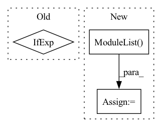

Pattern ID :28737
Before Change
super(ReversibleSequential, self).__init__()
coupling_forward = list(coupling_forward) if coupling_forward else [None]
coupling_inverse = list(coupling_inverse) if coupling_inverse else [None]
self.stem = torch.nn.Sequential(*[m if isinstance(m, ReversibleModule) else
ReversibleModule(m,
coupling_forward[i % len(coupling_forward)],
coupling_inverse[i % len(coupling_inverse)])
for i, m in enumerate(modules)])After Change
coupling_inverse: typing.Optional[typing.List[typing.Optional[typing.Callable]]] = None):
super(ReversibleSequential, self).__init__()
self.split_dim = split_dim
self.module_list = torch.nn.ModuleList( modules)
self.coupling_forward = list(coupling_forward) if coupling_forward else [additive_coupling_forward]
self.coupling_inverse = list(coupling_inverse) if coupling_inverse else [additive_coupling_inverse]
self.cpu_state: torch.Tensor = torch.get_rng_state()In pattern: SUPERPATTERN
Frequency: 4
Non-data size: 3
Instances Fragment ID: 84643355
Project Name: homebrewnlp/revlib
Commit Name: cf30076bdb714b10ae99eb3cfcb7ff02f3aff974
Time: 2021-08-22
Author: 39779310+ClashLuke@users.noreply.github.com
File Name: revlib/__init__.py
M Class Name: ReversibleSequential
N Class Name: ReversibleSequential
M Method Name: __init__(1)
N Method Name: __init__(1)
M Parent Class: torch.nn.Module
N Parent Class: torch.nn.Module
M File Name: revlib/__init__.py
N File Name: revlib/__init__.py
M Start Line: 82
M End Line: 89
N Start Line: 19
N End Line: 33
Before Change
super(MLP, self).__init__()
self.module_list = []
for i in range(num_layers):
d_in = input_dim if i == 0 else hidden_dim
d_out = embed_dim if i == num_layers - 1 else hidden_dim
self.module_list.append(nn.Linear(d_in, d_out, bias=bias))
if end_up_with_fc:After Change
self.num_layers = num_layers
self.lins = nn.ModuleList()
self.bns = nn.ModuleList()
self.lins.append(nn.Linear(input_dim, hidden_dim))
self.bns.append(nn.BatchNorm1d(hidden_dim))
Fragment ID: 84643368
Project Name: ytchx1999/maxp_dgl_graph
Commit Name: f58be51dd0cdd5e93c25fbd239940c88e554bf2e
Time: 2021-10-28
Author: 54234005+ytchx1999@users.noreply.github.com
File Name: gnn/models.py
M Class Name: MLP
N Class Name: MLP
M Method Name: __init__(5)
N Method Name: __init__(9)
M Parent Class: nn.Module
N Parent Class: nn.Module
M File Name: gnn/models.py
N File Name: gnn/models.py
M Start Line: 17
M End Line: 37
N Start Line: 53
N End Line: 70
Before Change
self.to_logits = nn.Sequential(
nn.LayerNorm(dim),
nn.Linear(dim, num_tokens)
) if exists(num_tokens) else nn.Identity()
def forward(self, x):
x = self.to_embed(x)After Change
self.to_embed = nn.Embedding(num_tokens, dim)
window = cast_tuple(window, depth)
layers = nn.ModuleList( [])
for ind, w in zip(range(depth), window):
layer_blocks = nn.ModuleList([
PreNorm(dim, gMLPBlock(dim = dim, dim_ff = dim_ff, seq_len = seq_len, heads = heads, window = w)) Fragment ID: 84643358
Project Name: lucidrains/g-mlp-gpt
Commit Name: 7642e36ff19c6b299a77e5c1ace038e9e6726202
Time: 2021-05-20
Author: lucidrains@gmail.com
File Name: g_mlp_gpt/g_mlp_gpt.py
M Class Name: gMLPGPT
N Class Name: gMLPGPT
M Method Name: __init__(1)
N Method Name: __init__(1)
M Parent Class: nn.Module
N Parent Class: nn.Module
M File Name: g_mlp_gpt/g_mlp_gpt.py
N File Name: g_mlp_gpt/g_mlp_gpt.py
M Start Line: 188
M End Line: 195
N Start Line: 194
N End Line: 215